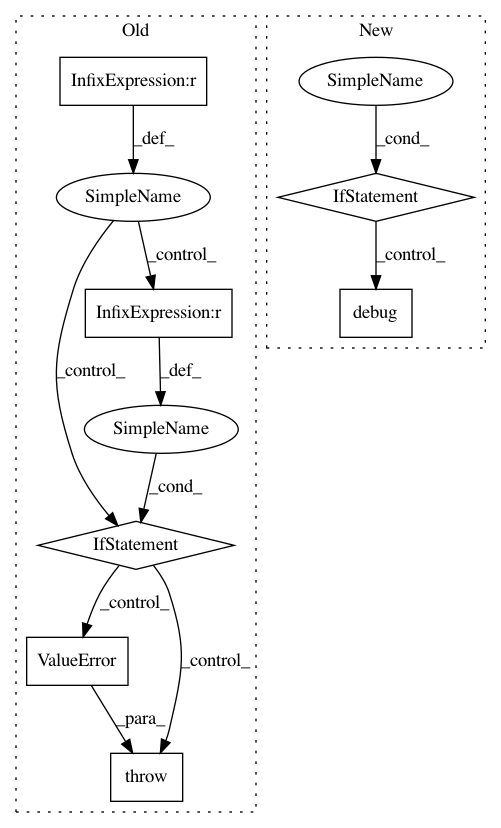

c490bc95a63a8c9bd00c0a202f1b3ba8c2a48b5a,dipy/io/stateful_tractogram.py,StatefulTractogram,__add__,#StatefulTractogram#Any#,206
Before Change
def __add__(self, other_sft):
Addition of two StatefulTractogram in a way that is consistent
with space, origin, data_per_point and data_per_streamline.
if self.space != other_sft.space:
raise ValueError("Inconsistent space between both sft.\n"
"Switch space of one or both sft before addition.")
if self.origin != other_sft.origin:
raise ValueError("Inconsistent origin between both sft.\n"
"Switch origin of one or both sft before addition.")
if self.get_data_per_point_keys() != other_sft.get_data_per_point_keys():
raise ValueError("Inconsistent data_per_point between both sft.\n"
"Either delete it from one or generate it for the "
"other.")
if self.get_data_per_streamline_keys() != other_sft.get_data_per_streamline_keys():
raise ValueError("Inconsistent data_per_streamline between both "
"sft.\nEither delete it from one or generate it "
"for the other.")
data_per_point = deepcopy(self.data_per_point)
for key in other_sft.data_per_point:
data_per_point._extend_entry(key,
After Change
def __add__(self, other_sft):
Addition of two sft with attributes consistency checks
if not self.is_compatible_sft(self, other_sft):
logger.debug(self)
logger.debug(other_sft)
raise ValueError("Inconsistent StatefulTractogram.\n"
"Make sure Space, Origin are the same and that "
"data_per_point and data_per_streamline keys are "
"the same.")
data_per_point = deepcopy(self.data_per_point)
data_per_point.extend(other_sft.data_per_point)
data_per_streamline = deepcopy(self.data_per_streamline)
In pattern: SUPERPATTERN
Frequency: 3
Non-data size: 7
Instances
Project Name: nipy/dipy
Commit Name: c490bc95a63a8c9bd00c0a202f1b3ba8c2a48b5a
Time: 2020-04-20
Author: francois.m.rheault@usherbrooke
File Name: dipy/io/stateful_tractogram.py
Class Name: StatefulTractogram
Method Name: __add__
Project Name: deepgram/kur
Commit Name: d1dfcc0b80c4ecead8866473e5cfdfd351ac7cbd
Time: 2017-05-10
Author: ajsyp@syptech.net
File Name: kur/backend/keras_backend.py
Class Name: KerasBackend
Method Name: process_loss
Project Name: deepgram/kur
Commit Name: d1dfcc0b80c4ecead8866473e5cfdfd351ac7cbd
Time: 2017-05-10
Author: ajsyp@syptech.net
File Name: kur/backend/pytorch_backend.py
Class Name: PyTorchBackend
Method Name: process_loss